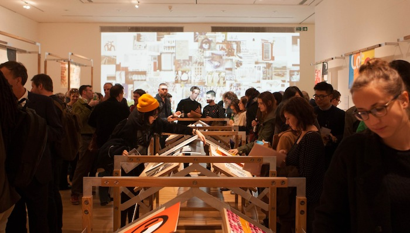
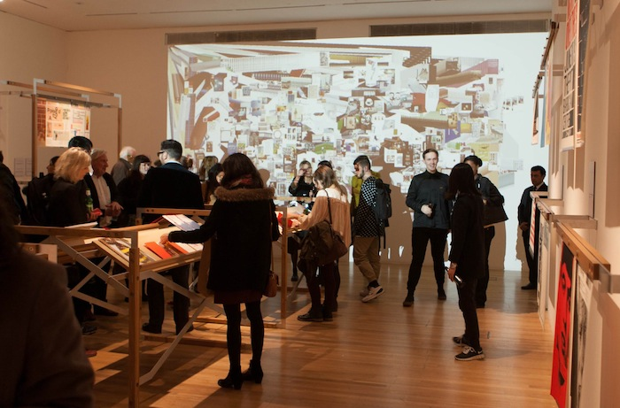
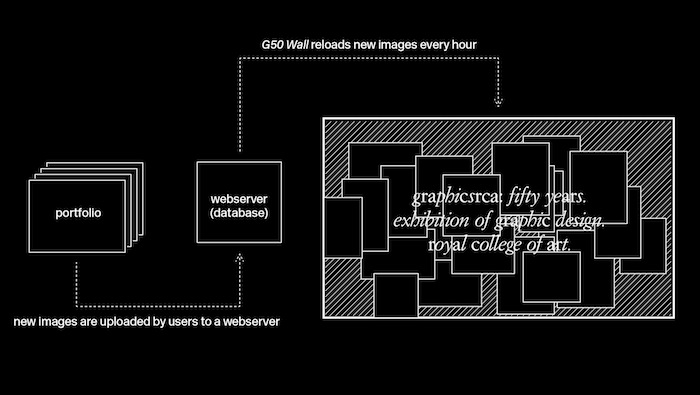
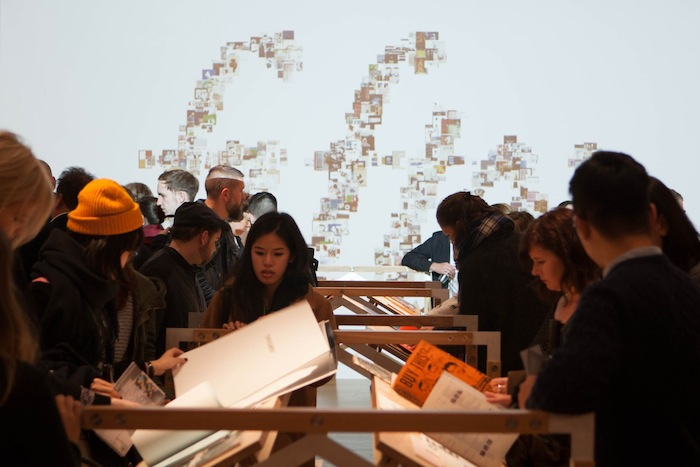

[Adrian Shaughnessy]
An interview with Kyuha Shim
The exhibition, GraphicsRCA: Fifty Years, currently showing at the Royal College of Art in London, features as its centerpiece a generative digital display by PhD candidate Kyuha Shim. As he explains in the interview below, the installation was composed of work submitted online by RCA graphic design alumni from all over the world. The installation is updated hourly as new content is incorporated dynamically. Shim’s approach signals an innovative take on the “living archive” in graphic design, and for the GraphicsRCA curators it constitutes a way of including RCA alumni in the curation process. As Kyuha explains: “I focused on making something that would show the exhibition as not just a static collection of our history, but also as a continuous re-gathering and celebration of our past, present and future.” The work can be viewed here.
Adrian Shaughnessy: Can you say something about your practice, and about your work and area of study as a PhD student at the RCA?
Kyuha Shim: My work is very diverse, although many projects use processes that are categorized as data visualization, analysis and fabrication, gestural interaction in space and image raster. However, to thread individual works into one developing practice, I can say that every single project is conceptualized and developed from systematic perspectives with the use of computation, driven either by data or parameters. I owe the implementation of computer-aided analytical approaches and methods in graphic design contexts to my past positions as a data visualization researcher at MIT and faculty member of RISD’s Digital+Media MFA program. Prior to those experiences, my practice was centered on commercial motion graphics and interface design, which now forms much of the thinking about the interior core of my generative systems.
My PhD research is focused on pattern analysis for generative typography under the supervision of Professor Teal Triggs, in the Visual Communication program at the RCA. The research involves exploring computer-aide analytical approaches to build and extract parameters in Generative Typography. The projects which form the basis of this practice-led PhD research will be published next year.
In my practice, the main interest lies in developing generative systems for typography using programming which looks at graphical elements as data within a visual system. While many people are aware of code-driven approaches in graphic design, some are wary of such processes and do not use them because they feel limited by technical explorations, and seem to lose the objective of communication. However, my work starts from graphic design and converts visual languages to discrete numeric representations to then apply them for code.
AS: What was your thinking behind the GraphicsRCA digital projection?
KS: During the planning of the GraphicsRCA 50 show, the physical limitations of the exhibition space was something we had to address, as it could not accommodate all the works submitted online by the alumni. Out of necessity I created a digital archive to incorporate all submitted works during the exhibition. Then for the design of the archive, I focused on making something that would show the exhibition as not just a static collection of our history, but also as a continuous regathering and celebration of our past, present and future. To demonstrate the process of continuity, I created an atmospheric and playful landscape with a diverse spectrum of works made between 1963 and 2013.
AS: What were the main technical challenges involved in making this work?
KS: It occurred to me that the nature of the work’s display could render it as either an interactive information visualization on the screen, or a form of video. This may invite viewers to interact physically by navigating and recategorizing the data sets (what slaves of digital interfaces we can be!), or on the other hand, invite viewers to simply watch by letting go of their urge to control the screen.
I sought to find an answer to one of the more challenging questions: How can we design a “live” and continuously growing archive of data using forms of moving image? It is often the case that once a design file is rendered using software tools, it is no longer modifiable. I therefore designed a generative system driven by a portfolio images on the archive database and, in real-time. The duration of each transition and the speed of every single element are randomly dictated within the parametric boundary that I have defined.
AS: Given more time, how could this project be extended?
KS: Currently the work only draws from the alumni’s portfolio images stored in the database as particles on the screen. While the installation connects the website and projection in real-time, they are both on the screen. To extend the project, I would like to ask the question: What if the digital archive of portfolios could be generated in the printed format in real-time? It would be interesting to see how a physical book might be generated from data sets continuously updated in realtime on the web server. The publication could also be selective and autogenerated upon users’ requests.
AS: What other projects are you currently working on?
KS: There are a few projects that I’m preparing for upcoming exhibitions. For my show which will take place at the RCA during the last week of January in 2015, I will be presenting a performance piece that stages the interaction between users and tools in the making process of graphic design.
I have also been invited to participate in the National Design Triennial at the Cooper Hewitt National Design Museum in New York next year, where I will exhibit two unpublished projects that demonstrate the challenges of generative typography. And lastly, I’m developing a generative typography work for a large projection with sound, but I have yet to decide where to publish this. If there are any opportunities that arise, please contact me! I will also take part in RCA Research Biennial Exhibition in April 2015, for which I will create a generative identity piece.
In addition to exhibition projects, I’m also preparing a small publication which explores part-to-whole theory represented with pixels of an image. It is being developed in collaboration with Jan van Eyck Academie in the Netherlands, and I expect it to be launched during the spring of next year. There are several more projects which are ongoing, but the biggest ones are two primary research projects relevant to my PhD thesis.
Kyuha Shim (Q) is a designer, researcher, and lecturer based in London. He is currently a PhD candidate at the Royal College of Art and Visiting Lecturer on the MA Information Experience Design programme at the RCA. He holds an MFA from the Rhode Island School of Design (RISD) in Digital+Media, and a BFA from Hongik University in Digital Media Design. Examples of his work, which integrates code and design, can be found on his website.